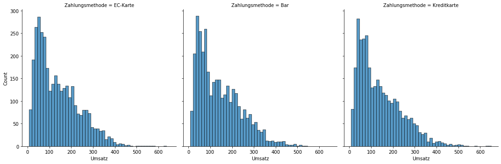
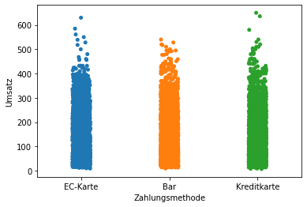
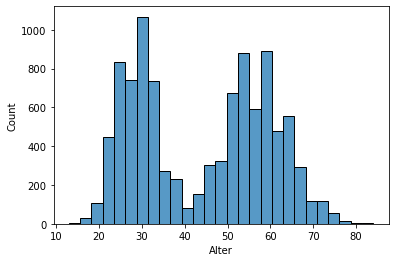
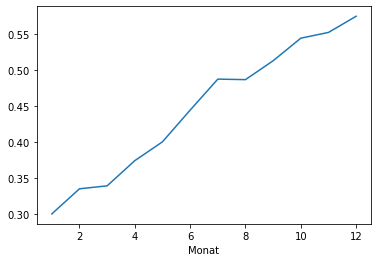
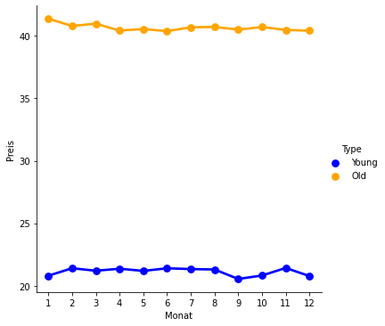
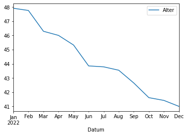
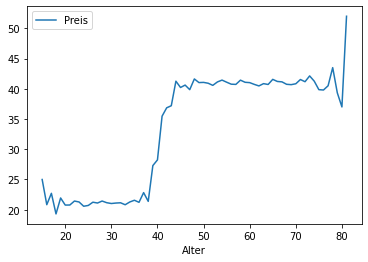

import random
import pandas as pd
# Create a list of product names
products = ['Apple', 'Banana', 'Orange']
# Assign a price to each product
prices = {'Apple': 1.99, 'Banana': 0.79, 'Orange': 2.49}
# Create a list of transaction data
data = []
for i in range(10):
transaction = {
'product': random.choice(products),
'price': prices[random.choice(products)],
'quantity': random.randint(1, 10),
'date': '2022-01-0' + str(i+1),
'total': 0
}
transaction['total'] = round(transaction['price'] * transaction['quantity'], 2)
data.append(transaction)
# Create a DataFrame from the transaction data
df = pd.DataFrame(data)
df.drop(columns=['total'], inplace=True)df.to_excel("sales.xlsx", index=False)import pandas as pd
import numpy as np
from faker import Faker
# Initialize the Faker object
fake = Faker()
# Define the number of transactions to simulate
num_transactions = 10000
# Create empty lists to store the data
dates = []
customer_age = []
products = []
prices = []
quantities = []
# Define the product list
product_list = ["Product A", "Product B", "Product C", "Product D", "Product E", "Product F", "Product G", "Product H", "Product I", "Product J"]
# Define the price list
price_list = [10,20,30,40,50,60,70,80,90,100]
# Define the ratio of older to younger customers
old_customer_ratio = 0.2
young_customer_ratio = 0.8
# Define the average purchase value for older and younger customers
old_customer_avg_purchase = 50
young_customer_avg_purchase = 20
# Simulate the data
for _ in range(num_transactions):
# Assign a date within the last year
dates.append(fake.date_between(start_date='-1y', end_date='today'))
# Assign a random age to the customer
customer_age.append(fake.random_int(min=18, max=80))
# Assign a random product to the customer
products.append(np.random.choice(product_list))
# Assign the corresponding price to the product
prices.append(price_list[product_list.index(products[-1])])
# Assign a random quantity to the customer
if customer_age[_] < 40:
# Assign a quantity based on the young customer average purchase value
quantities.append(np.random.normal(young_customer_avg_purchase / prices[-1],1))
else:
# Assign a quantity based on the old customer average purchase value
quantities.append(np.random.normal(old_customer_avg_purchase / prices[-1],1))
transactions_df = pd.DataFrame({'date': dates, 'customer_age': customer_age, 'product': products, 'price': prices, 'quantity': quantities})
transactions_df["quantity"] = transactions_df["quantity"].apply(lambda x: x if x>0 else 0)
transactions_df.head()| date | customer_age | product | price | quantity | |
|---|---|---|---|---|---|
| 0 | 2022-10-02 | 28 | Product H | 80 | 1.558574 |
| 1 | 2022-04-23 | 47 | Product A | 10 | 5.244605 |
| 2 | 2022-11-16 | 29 | Product D | 40 | 0.570323 |
| 3 | 2022-08-17 | 75 | Product G | 70 | 1.689713 |
| 4 | 2022-03-31 | 54 | Product B | 20 | 2.513816 |
Simulation - Einführende Fallstudie
Datensatz:
- alte und junge Kunden
- über die Zeit hat sich Anteil an jungen Kunden erhöht
- Umsatz rückläufig, weil junge Kunden weniger ausgeben, d.h. andere Produkte und weniger Umsatz pro Kunde
import pandas as pd # Data manipulation
import numpy as np
import scipy.stats as stats # Statistical analysis; mainly distributions
from faker import Faker # Generate fake data
import matplotlib.pyplot as plt
import seaborn as sns
from typing import Listdef perc_young_trend(start_perc: float, end_perc: float, n: int) -> np.ndarray:
"""
Simulate percentage of young customers trend over time
Args:
start_perc (float): percentage of young customers at the start of the simulation
end_perc (float): percentage of young customers at the end of the simulation
n (int): number of time steps to simulate
Returns:
np.ndarray: percentage of young customers trend over time
"""
# create a time series trend
trend = np.linspace(start_perc, end_perc, n)
# add some noise to the trend
noise = np.random.normal(0, 0.06, n)
perc = trend + noise
# Ensure that perc is between 0 and 1
perc = np.clip(perc, 0.01, 0.99)
return percnp.random.seed(10)
n_transactions = 10_000 # Number of transactions to simulate
start_perc_young = 0.2 # Percentage of young customers at the start of the simulation
end_perc_young = 0.7 # Percentage of young customers at the end of the simulation
# Define parameters for the young and old customers (average price, average quantity, etc.)
paras_customer = {"avg_price": [19, 39], "avg_quantity": [2, 4], "age": [22, 50]}
dist = stats.poisson # Distribution to use for the price and quantity and the age
# Fake data generator to generate
# - fake customer names
# - fake customer ages
fake = Faker(locale="de-DE")
perc_young = perc_young_trend(start_perc_young, end_perc_young, n_transactions)
data = {"customer_age": [], "customer_name": [], "customer_payment_method": [], "price": [], "quantity": [], "wochentag": []}
for i in range(0, n_transactions):
customer_type = np.random.choice([0, 1], p=[perc_young[i], 1-perc_young[i]])
customer_age = dist.rvs(paras_customer["age"][customer_type]) + 7
customer_name = fake.name()
customer_payment_method = np.random.choice(["Kreditkarte", "Bar", "EC-Karte"])
wochentag = np.random.choice(["Montag", "Dienstag", "Mittwoch", "Donnerstag", "Freitag", "Samstag"], p=[0.15, 0.15, 0.15, 0.15, 0.15, 0.25])
# Minimum price is 1
price = dist.rvs(paras_customer["avg_price"][customer_type]) + 1.99
# Minimum quantity is 1
quantity = dist.rvs(paras_customer["avg_quantity"][customer_type]) + 1
total = price * quantity
data["customer_age"].append(customer_age)
data["customer_name"].append(fake.name())
data["customer_payment_method"].append(customer_payment_method)
data["price"].append(price)
data["quantity"].append(quantity)
data["wochentag"].append(wochentag)
# Create a DataFrame from the transaction data and translate column names to German
df = pd.DataFrame(data)
df.columns = ["Alter", "Kundenname", "Zahlungsmethode", "ø Preis", "Menge", "Wochentag"]
df = df[["Kundenname", "Alter", "Zahlungsmethode", "ø Preis", "Menge", "Wochentag"]]
# Add column "Datum" with sorted Dates from 1.1.2022 to 31.12.2022 all days must be from 10am to 8pm
df["Datum"] = pd.date_range(start="2022-01-01", end="2022-12-31", periods=n_transactions, tz="Europe/Berlin")
df["Datum"] = df["Datum"].apply(lambda x: x.replace(hour=np.random.randint(10, 20), minute=np.random.randint(0, 60)))
df = df.sort_values(by="Datum").reset_index(drop=True)
# Split Date into two columns "Datum" and "Uhrzeit" (hh:mm:ss)
df["Uhrzeit"] = df["Datum"].apply(lambda x: x.strftime("%H:%M:%S")).astype("object")
df["Datum"] = df["Datum"].apply(lambda x: x.strftime("%d.%m.%Y"))#.astype("object")
df = df.drop(columns=["Wochentag"])
# Save to csv
df.to_csv("../_data/transactions_fashion_avenue.csv", index=False)
df.head()| Kundenname | Alter | Zahlungsmethode | ø Preis | Menge | Datum | Uhrzeit | |
|---|---|---|---|---|---|---|---|
| 0 | Gislinde Börner | 29 | EC-Karte | 14.99 | 4 | 01.01.2022 | 10:24:44 |
| 1 | Pierre Ullmann | 28 | Bar | 17.99 | 4 | 01.01.2022 | 10:55:09 |
| 2 | Rainer Birnbaum | 57 | Bar | 43.99 | 4 | 01.01.2022 | 11:25:31 |
| 3 | Ekaterina Binner | 47 | Kreditkarte | 36.99 | 3 | 01.01.2022 | 11:30:28 |
| 4 | Prof. Mandy Riehl | 59 | Bar | 35.99 | 4 | 01.01.2022 | 11:46:50 |
import pandas as pd
import seaborn as sns
# read in the data
df = pd.read_csv("../_data/transactions_fashion_avenue.csv")
df = (df.astype({"Datum": "datetime64[ns]"})
.assign(Umsatz = lambda x: x["ø Preis"] * x["Menge"])
.assign(Preis = lambda x: x["ø Preis"])
.assign(Wochentag = lambda x: x["Datum"].dt.day_name())
.assign(Monat=lambda x: x["Datum"].dt.month)
.assign(Woche=lambda x: x["Datum"].dt.week)
)
df.head()FutureWarning: Series.dt.weekofyear and Series.dt.week have been deprecated. Please use Series.dt.isocalendar().week instead.
.assign(Woche=lambda x: x["Datum"].dt.week)| Kundenname | Alter | Zahlungsmethode | ø Preis | Menge | Datum | Uhrzeit | Umsatz | Preis | Wochentag | Monat | Woche | |
|---|---|---|---|---|---|---|---|---|---|---|---|---|
| 0 | Gislinde Börner | 29 | EC-Karte | 14.99 | 4 | 2022-01-01 | 10:24:44 | 59.96 | 14.99 | Saturday | 1 | 52 |
| 1 | Pierre Ullmann | 28 | Bar | 17.99 | 4 | 2022-01-01 | 10:55:09 | 71.96 | 17.99 | Saturday | 1 | 52 |
| 2 | Rainer Birnbaum | 57 | Bar | 43.99 | 4 | 2022-01-01 | 11:25:31 | 175.96 | 43.99 | Saturday | 1 | 52 |
| 3 | Ekaterina Binner | 47 | Kreditkarte | 36.99 | 3 | 2022-01-01 | 11:30:28 | 110.97 | 36.99 | Saturday | 1 | 52 |
| 4 | Prof. Mandy Riehl | 59 | Bar | 35.99 | 4 | 2022-01-01 | 11:46:50 | 143.96 | 35.99 | Saturday | 1 | 52 |
df.groupby("Zahlungsmethode").agg({"Umsatz": "mean"})| Umsatz | |
|---|---|
| Zahlungsmethode | |
| Bar | 141.536187 |
| EC-Karte | 139.903873 |
| Kreditkarte | 138.914361 |
sns.displot(df, x="Umsatz", kind="hist", fill=True)<seaborn.axisgrid.FacetGrid at 0x7f95d1996bb0>
sns.stripplot(data=df, x="Zahlungsmethode", y="Umsatz")<AxesSubplot:xlabel='Zahlungsmethode', ylabel='Umsatz'>
# Check if average age of customes has changed over time (groupby Datum)
df.groupby("Monat").agg({"Alter": "mean"})| Alter | |
|---|---|
| Monat | |
| 1 | 48.631887 |
| 2 | 47.513690 |
| 3 | 47.354460 |
| 4 | 46.174970 |
| 5 | 45.522248 |
| 6 | 44.457978 |
| 7 | 43.024561 |
| 8 | 43.577830 |
| 9 | 42.141304 |
| 10 | 41.208235 |
| 11 | 41.275152 |
| 12 | 40.694175 |
sns.histplot(data=df, x="Alter")<AxesSubplot:xlabel='Alter', ylabel='Count'>
df = df.assign(Type=lambda x: np.where(x["Alter"] < 40, "Young", "Old"))
# Check if % of "Young" has changed over time
df.groupby("Monat")["Type"].value_counts(normalize=True).unstack()["Young"].plot()#.plot()<AxesSubplot:xlabel='Monat'>
sns.catplot(x="Monat", y="Preis", data=df, kind="point", palette={"Young": "blue", "Old": "orange"}, hue="Type", ci=None)<seaborn.axisgrid.FacetGrid at 0x7fa118d9bd00>
df.groupby(pd.Grouper(key="Datum", freq="M")).agg({"Alter": "mean"}).plot()<AxesSubplot:xlabel='Datum'>
df.groupby(["Altera"]).agg({"Preis": "mean"}).plot()<AxesSubplot:xlabel='Alter'>
df.drop(columns="Wochentag").to_csv("../_data/transactions_fashion_avenue.csv", index=False)df.groupby(pd.Grouper(key="Uhrzeit", freq="H")).agg({"Menge": "mean"})
# define dict with different parameters for distribution for old and young customersTypeError: Only valid with DatetimeIndex, TimedeltaIndex or PeriodIndex, but got an instance of 'Index'